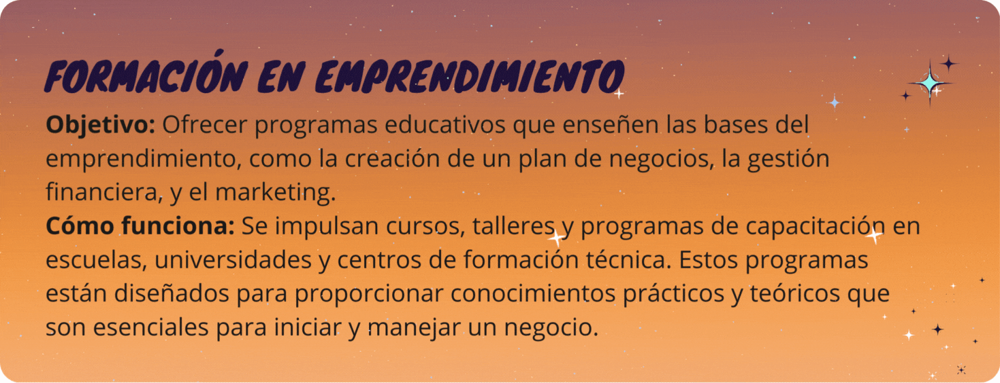
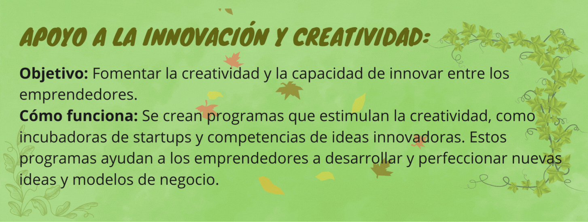
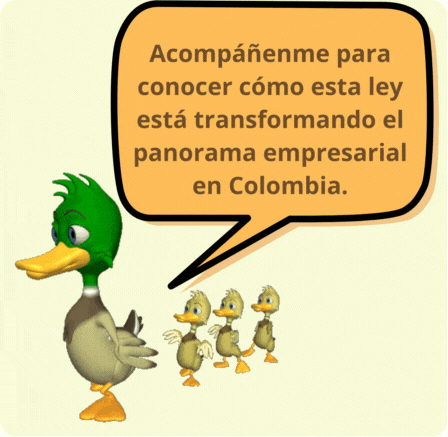

Eje 5: Educación y desarrollo de habilidades para el emprendimiento



¡Hola! Bienvenidos a este blog donde exploras los 5 ejes clave de la Ley 2069 de 2020, conocida como la Ley de Emprendimiento en Colombia. Esta ley busca impulsar a los emprendedores, simplificando procesos, facilitando el acceso a recursos, y promoviendo un entorno más favorable para el crecimiento de nuevos negocios.
Se establecen tarifas especiales más bajas para trámites y servicios gubernamentales que los emprendedores deben realizar para formalizar y operar sus negocios. Esto incluye costos de registro, licencias, y otros trámites necesarios.
Se implementan medidas para reducir la cantidad de trámites, documentos y tiempo necesario para la creación y operación de una empresa. Esto puede incluir la simplificación de formularios, la digitalización de procesos, y la integración de varios trámites en un solo paso.
Objetivo: Se crean mecanismos para que las pequeñas empresas
puedan participar en licitaciones públicas, con menos trámites y
requisitos adaptados a su tamaño.
Objetivo: Garantizar que un porcentaje de las compras del
gobierno se destine a las MIPYMES.
Cómo funciona: La ley establece que un porcentaje de los
contratos públicos debe ser adjudicado a emprendedores, asegurando
que tengan un mercado más accesible y estable.
Objetivo: Preparar a los emprendedores para que puedan
cumplir con los requisitos de las compras públicas.
Cómo funciona: Se ofrecen capacitaciones y apoyo técnico para
que las MIPYMES aprendan a participar en licitaciones y entiendan
mejor los procesos.
Cómo funciona: Se promueven líneas de crédito especiales con condiciones más favorables, como tasas de interés más bajas y plazos de pago más flexibles. Además, se impulsan garantías para que los bancos y otras instituciones financieras estén más dispuestos a prestar dinero a los emprendedores.
Cómo funciona: La ley fomenta la creación de fondos de capital de riesgo y otros mecanismos de inversión que permitan a los emprendedores acceder a capital para sus proyectos. También se incentiva la inversión de personas y empresas en emprendimientos a través de beneficios fiscales.
Cómo funciona: Se apoya el desarrollo de alternativas como el crowdfunding (financiamiento colectivo) y la financiación basada en activos, dándoles un marco legal más claro y accesible.
Fortalecimiento de entidades públicas y privadas:
Objetivo: Mejorar el funcionamiento de las instituciones que
trabajan en pro del emprendimiento, para que puedan ofrecer
mejores servicios y apoyo a los emprendedores.
Cómo funciona: Se refuerza la capacidad de entidades como
el SENA, el Ministerio de Comercio, Industria y Turismo, y cámaras
de comercio, entre otras, para que puedan brindar formación,
asesoría, y recursos a los emprendedores de manera más eficiente.
Coordinación interinstitucional:
Objetivo: Asegurar que las diferentes entidades que apoyan
a los emprendedores trabajen de manera coordinada.
Cómo funciona: Se promueve una mejor comunicación y
colaboración entre las instituciones públicas, privadas y
académicas, para que los emprendedores reciban un apoyo más
integral y sin duplicaciones o vacíos.
Creación de políticas claras y efectivas:
Objetivo: Desarrollar políticas públicas coherentes y bien
estructuradas que impulsen el emprendimiento.
Cómo funciona: Se fomenta la creación de políticas que
respondan a las necesidades reales de los emprendedores y que se
implementen de manera efectiva, con un enfoque claro en los
resultados.
Monitoreo y evaluación:
Objetivo: Asegurar que las iniciativas y programas de apoyo
al emprendimiento funcionen bien y sean efectivos.
Cómo funciona: Se implementan mecanismos de evaluación
continua para medir el impacto de las políticas y programas de
emprendimiento, y hacer ajustes cuando sea necesario para mejorar su
efectividad.